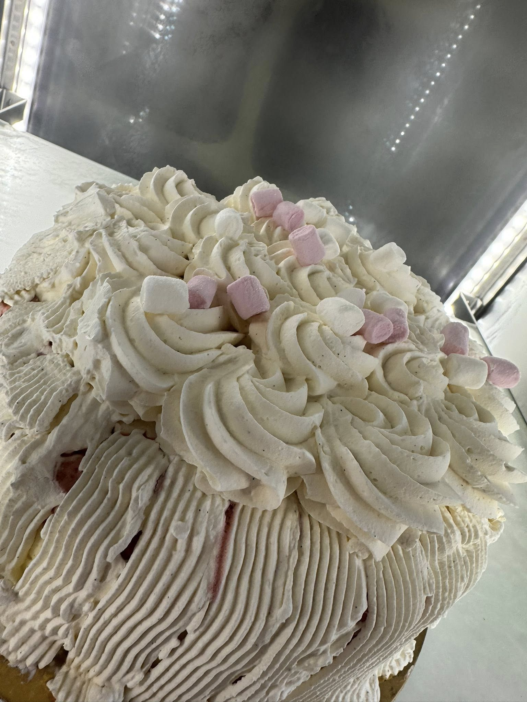
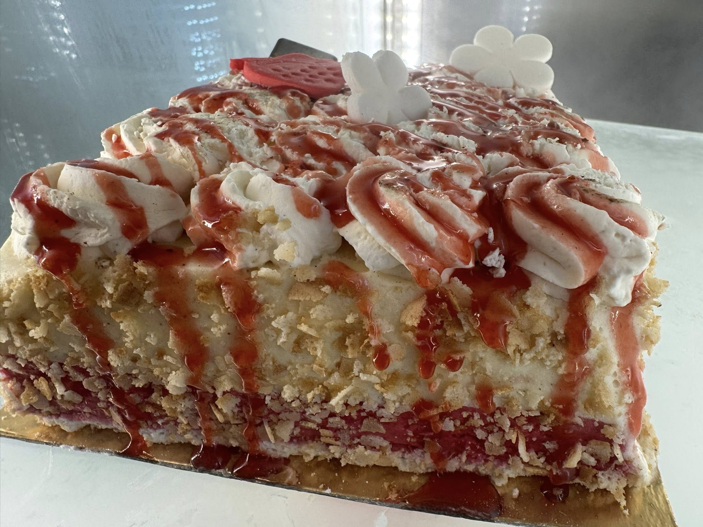
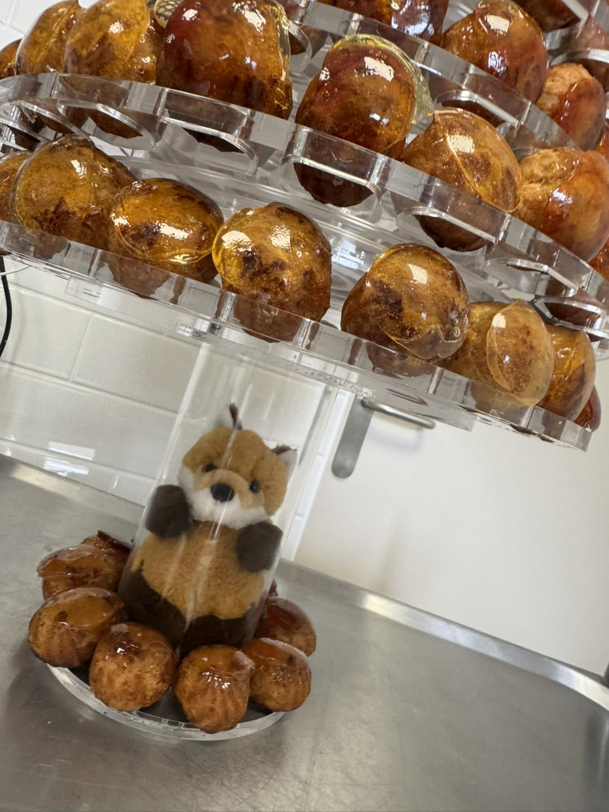
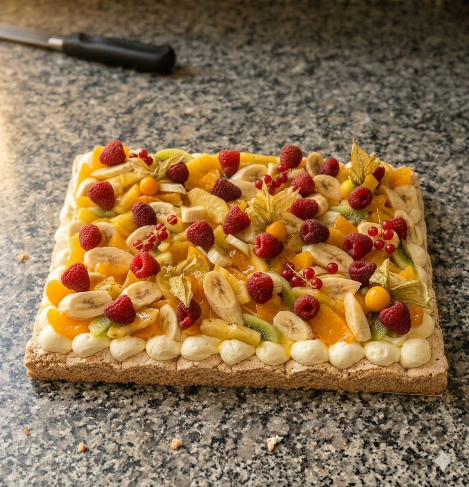
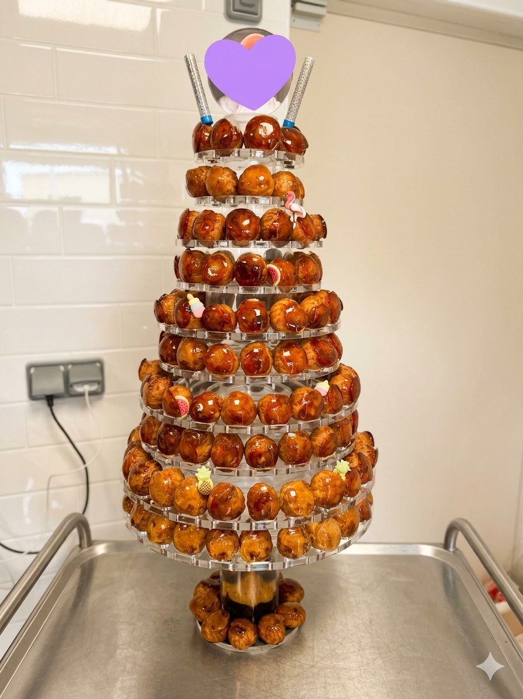
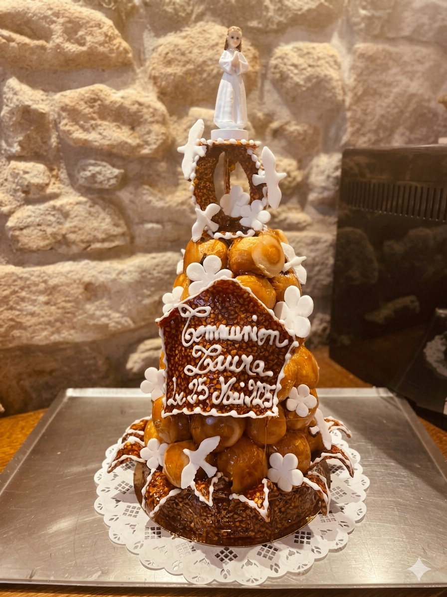

La chaleur d'une vraie boutique, pas d'un site generique.
Le parcours raconte une journee concrete : les premieres envies du matin, la pause dejeuner, le dessert du week-end puis les creations festives.
Pains du quotidien, viennoiseries maison, pause dejeuner, patisseries gourmandes et creations sur commande au coeur de la rue Cadiou.


L'idee est de montrer la Boulangerie du Kreisker comme on la ressent sur place : une facade reconnaissable, une offre lisible et une ambiance artisanale qui met les produits en avant sans artifices.
Le parcours raconte une journee concrete : les premieres envies du matin, la pause dejeuner, le dessert du week-end puis les creations festives.
La facade, la rue Cadiou et les horaires deviennent des reperes immediats.
Pains, snacking, patisseries et commandes sont comprenables en quelques secondes.
Facebook, TripAdvisor et l'acces direct renforcent la confiance.
Viennoiseries maison et premieres fournissees.
Pause dejeuner rapide, lisible et facile a emporter.
Gateaux, entremets et pieces montees pour les evenements.
Tout ce qui doit donner envie est montre tout de suite : du quotidien, du pratique, puis du gourmand.

Le matin se raconte avec des produits dores, simples et irresistibles.

Une offre visible et pratique pour les gens du coin comme pour les visiteurs.

Des visuels forts pour le dessert, le gouter ou l'envie de derniere minute.
Textures, creme, fruits, feuilletage et petits gateaux : la page doit donner faim avant meme de prendre l'itineraire.





La boulangerie ne montre pas seulement de la vitrine : elle sait aussi prolonger l'experience avec des gateaux de commande, des tartes genereuses et des pieces montees pour les moments importants.




Horaires, adresse, telephone et liens locaux sont directement visibles pour faciliter la visite, l'appel ou l'itineraire.
Horaires reprenant les informations que vous avez donnees : mardi a samedi 07:00-19:00, dimanche 07:00-12:30, lundi ferme.
Boulangerie artisanale a Saint-Pol-de-Leon, pensee pour les habitants du coin, les passages du midi et les envies gourmandes.